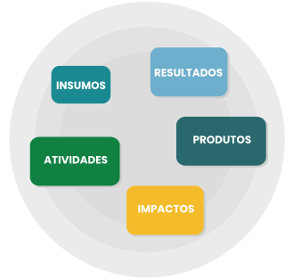

TÓPICO 1
MONITORAMENTO E AVALIAÇÃO NA GESTÃO EM SAÚDE
TÓPICO 1
MONITORAMENTO E AVALIAÇÃO NA GESTÃO EM SAÚDE
Clique nos componentes estruturais e veja a conceituação de cada um deles.
INSUMOS
São os recursos mobilizados para a execução das atividades previstas na intervenção. Devem estar previamente disponíveis para que a intervenção seja operacionalizada. Englobam os recursos de infraestrutura, os recursos humanos, os recursos financeiros, os recursos informacionais e os recursos técnicos. Exemplos: equipe profissional, medicamentos, equipamentos médicos, protocolos assistenciais, entre outros.
x
RESULTADOS
São os efeitos intermediários na população-alvo da intervenção, geralmente de curto e médio prazo, e que refletem a mudança esperada. Exemplos: aumento do percentual de gestantes testadas, redução da taxa de abandono do tratamento, aumento do conhecimento sobre as formas de contracepção, entre outros.
x
ATIVIDADES
São as ações propriamente ditas, que mobilizam os insumos para o alcance dos efeitos esperados. Exemplos: testagem, capacitação, busca ativa, dispensação de medicamentos, realização de oficinas e atividades de promoção à saúde, entre outros.
x
PRODUTOS
São os efeitos imediatos de uma atividade, ou seja, refletem a interação entre os insumos mobilizados, as atividades realizadas e o contexto no qual a intervenção está inserida. Estão associados à ideia de produção ou produtividade. Exemplos: sintomáticos respiratórios identificados, usuários testados, medicamentos dispensados, casos resgatados, entre outros.
x
IMPACTOS
São efeitos finalísticos, que expressam a mudança desejada e que se refletem na população geral. Geralmente são de longo prazo e cumulativos, isto é, são influenciados por outras intervenções, projetos, programas ou políticas já existentes. Exemplos: redução da mortalidade materno-infantil, redução da morbimortalidade por dengue, aumento da expectativa de vida da população brasileira, entre outros.
x